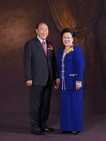
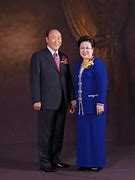
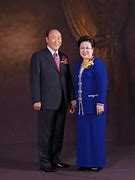
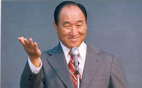
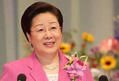

Through earnest prayer at age 16, Rev. Sun Myung Moon uncovered the mystery of God’s providence, the reason for human suffering and new insights into history that would eventually make up the core teachings of the Unification Movement. The legacy he left behind is one that continues to grow. As Mother Moon continues his work, his words and works continue to inspire people from all around the world to live a life of gratitude, peace and love.

A curious and passionate young boy contemplated the big questions of life. Amidst the oppression of Japanese rule in 1930's Korea, the young Sun Myung Moon seeked solace in his faith. Little did he know, that a passionate prayer on the mountainside on a quiet Easter Morning would change the course of his life forever. Through earnest prayer and dedicated study, Father Moon uncovered the mystery of God’s providence, the reason for human suffering and new insights into history that would eventually make up the core teachings of the Unification Movement. With a love for his country, God and all people, he sought to make a difference for his homeland and to spread God’s message. Not everyone would understand, however, and he soon found that new ideas can be dangerous. In order to serve God and accomplish his mission, he would have to endure seemingly insurmountable odds, sacrificing his family, freedom, and almost his life...

Hak Ja Han Moon, the co-founder of the Unification Movement, has dedicated her life to the quest for peace. Along with her husband, she has worked with heads of state, Nobel prize winners, religious leaders, and men and women of the arts to create a world of God's ideal. This life long pursuit has taken her around the world, where her voice has been heard in national and international halls of power. In July of 1993, she was the first Korean woman to address a meeting of United States Senators and Congressmen on Capitol Hill. Two months later, on September 7, Mother Moon became the first Korean woman to give an address in the United Nations. Her message on both these occasions connected women's responsibility in the quest for world peace with the deepest elements of human existence: the heart of God, the suffering of humanity, and the meaning of human history. As a mother of 14, she is a woman of intense devotion to God, to the world, and to her husband and family – a woman of true love.